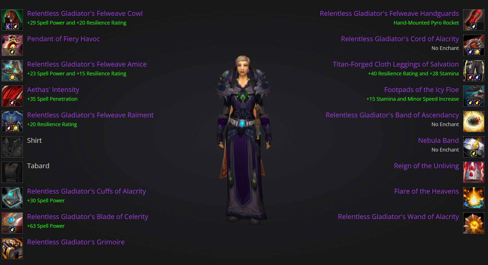

Best Gear & Equipment Choices
Discover the top gear and equipment to enhance your gameplay.
WotLK Classic Affliction Warlock Gear and Best in Slot
Last updated on Sep 24, 2023 at 11:00 by
On this page, you will find the best PvE gear and best in slot items for your Affliction Warlock in WotLK Classic.
Path of Exile: Trial of the Ancestors - Official Release Date Trailer
00:00
/
01:49
Pages in this Guide
12345678
TABLE OF CONTENTS OF THIS PAGE
1.
Affliction Warlock Phase 4 Best in Slot List
In this guide we go over the different gear available for in Phase 4 of Wrath of the Lich King Classic. First off, there are a ton of options for gearing in this phase. We have 10-man and 25-man loot with options at normal or Hardmodes loot. That being said, we will briefly show some alternatives to use until you get your absolute Best in Slot. We will offer multiple different pieces as some can be expensive or very rare to obtain. Some slots also have multiple "best" items that can change depending on your other gear choices and your hit rating. Most of these options are interchangable in one way or the other based on your hit rating. If you find yourself low on hit, then pick up one of the options listed with hit or vice versa, so long as you are always hit capped. Check out the link below for a breakdown and detailed explanation on our stats page for Affliction Warlocks.
1.1.
Other Affliction Warlock Best in Slot Lists
If you are starting out as a freshly-leveled , our pre-raid best in slot list is meant to give you an idea of non-raid items you can chase as a solo / pug(pick up group) player in preparation for .
Do note that items from Heroic or that require s (which are obtained from Heroics) can be hard to get due to their daily lockout.
BEST IN SLOT BY PHASE
Phase 4Phase 3Phase 2Phase 1
PHASE 4 / TIER 10
The items in the list below are considered to be best in slot for Affliction Warlocks in Phase 4 / Tier 10. Many of the items in this list will drop from Hardmodes in Icecrown Citadel 25-man, some from 10/25-man Hardmodes (HM).
Most, if not all, of this gear will be highly contested by other casters in your raid. This goes especially for the Heroic version (item level 277) of the Tier 10 set, which we share with Paladins and Priests. Expect the first 4 set to go to Paladin tanks before Affliction.
As for the Tier 10 set bonuses. The 2 set increases the damage of your Corruption and Shadow Bolt by 10%. This is very good and you should be trying to get this as soon as possible. The 4 set is amazing. Each time your Unstable Affliction deals DoT damage, you have a 15% chance to gain 10% damage done by you and your pet by 10 seconds. This proc is called Devious Minds and also can be used to snapshot into your Corruption. You will be wanting to get your 4 set as fast as you can. The best options for your four pieces of Tier 9 are the Hood, Shoulderpads, Gloves and Chest.
The Tier 10 set has a 251, a 264 and a 277 item level version. Due to the strength of the 4 set, it is highly recommended to just use the any item level version of it until you get the tokens for 277 item level.
Both Alliance and Horde have the same Best in Slot set besides Horde uses the bracers , while Alliance uses .
4. Gear Acquisition Strategies
To maximize your Affliction Warlock's potential, acquiring the right gear is essential. Here are several strategies to help you gear up effectively:
- Dungeons and Raids: Participate in dungeon runs and raids regularly. The higher the difficulty, the better the loot. Focus on events that offer gear beneficial to Affliction Warlocks.
- Crafting: Some of the best items can be crafted. Collaborate with crafters or level up your own crafting skills to create or obtain powerful enchanted gear.
- World Drops and Quests: Keep an eye out for world drop items and complete quests that reward gear upgrades. Sometimes, these can be as powerful as raid loot.
- Trading and Auctions: Use the auction house to buy and sell gear. Be strategic about your purchases, and don't be afraid to invest in significant upgrades.
- PvP Battlegrounds and Arenas: Engaging in PvP can also reward you with gear suitable for PvE content. Accumulate honor and conquest points to exchange for gear.
Remember to always balance your stat priorities when choosing gear. The right combination can enhance your damage output, mana efficiency, and survivability on the battlefield.